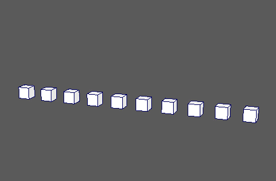
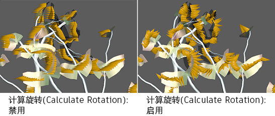
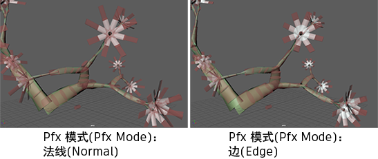

将点分布到行、列、步进效果等结构中。默认情况下，首次创建 MASH 网络时，将创建其中一个节点。
-
点数(Number of Points)
- 确定要创建的点数（“实例化器”(Instancer)随后将对象实例放置到该点上）。
-
排列(Arrangement)
-
确定分布方法。选项包括：
- 线性(Linear)：沿直线分布点。
- 径向(Radial)：沿圆周或以螺旋方式分布点。
- 球形(Spherical)：在虚构球体的曲面上随机分布点。自动设置动画。
- 网格(Mesh)：沿多边形网格或在多边形网格内分布点。
- 输入位置 PP(inPositionPP)：使用距离 nParticle/SOuP 的粒子位置确定分布。若要使用此选项，请将 nParticle 形状的“位置”(Position)属性连接到该节点的“输入位置 PP”(In Position PP)属性。
- 栅格(Grid)：将点分布到 2D 或 3D 矩阵中。
- 初始状态(Initial State)：以与手动指定的变换相同的位置/旋转/比例放置点。
- Paint Effects：沿 Paint Effects 笔划分布点。
- 体积(Volume)：在球形或立方体积内随机分布点。
线性(Linear)
-
中心分布(Center Distribution)
-
-
距离 X(Distance X)、距离 Y(Distance Y)、距离 Z(Distance Z)
- 控制三个轴中每个轴上的点间距。
-
缩放 X(Scale X)、缩放 Y(Scale Y)、缩放 Z(Scale Z)
- 控制所有对象实例的缩放。
-
旋转 X(Rotate X)、旋转 Y(Rotate Y)、旋转 Z(Rotate Z)
- 控制所有对象实例的旋转。
-
偏移(Offset)
- 向每个对象的三个变换添加增量偏移值。
径向(Radial)
-
半径(Radius)
- 确定要分布点的中心的半径。
-
角度(度)(Angle (degrees))
- 确定要分布点的中心的角度（以度为单位）。
-
Z 偏移(Z Offset)
- 确定要在 Z 轴上分布点的长度。较小的值会导致圆形分布，而较大的值则会导致螺旋式分布。
-
径向轴(Radial Axis)
- 确定要排布实例的轴。
-
计算旋转(Calculate Rotation)
- 自动旋转使圆周朝下。
-
忽略渐变(Ignore Ramps)
- 用于禁用“渐变”(Ramps)部分中任何渐变的效果。
栅格(Grid)
-
中心分布(Center Distribution)
-
-
距离 X(Distance X)、距离 Y(Distance Y)、距离 Z(Distance Z)
- 控制三个轴中每个轴上的点间距。
-
栅格 X(Grid X)、栅格 Y(Grid Y)、栅格 Z(Grid Z)
- 控制栅格中的行数和列数。
体积(Volume)
-
体积形状(Volume Shape)
- 确定“排列”(Arrangement)设置为“体积”(Volume)时要在其中扩散点的体积形状。
-
体积大小(Volume Size)
- 根据边（当“体积形状”(Volume Shape)设置为“立方体”(Cube)时）或半径（当“体积形状”(Volume Shape)设置为“球体”(Sphere)时）确定包含体积的大小。
-
球形偏移(Spherical Bias)
- 确定球形体积内的点与该球体中心（而不是边）的接近程度。
球形(Spherical)
-
角度 X(度)(Angle X (degrees))、角度 Y(度)(Angle Y (degrees))
- 确定每个轴上要分布点的中心的角度（以度为单位）。
-
半径(Radius)
- 确定要分布点的中心的半径。
-
动画速度(Animation Speed)
- 更改点在“动画时间”(Animation Time)范围内围绕球体移动的速度。
-
动画时间(Animation Time)
- 根据“动画速度”(Animation Speed)围绕球体移动点。
-
忽略渐变(Ignore Ramps)
- 用于禁用“渐变”(Ramps)部分中任何渐变的效果。
网格(Mesh)
-
方法(Method)
-
当
“排列”(Arrangement)设置为
“网格”(Mesh)时，此属性确定沿连接网格的分布方法。选项包括：
- 散射(Scatter)：在网格的曲面上随机分布点。
- 顶点(Vertex)：在网格的顶点上分布点。
- 随机顶点(Random Vertex)：在随机顶点上分布点。
- 面中心(Face Centers)：在面中心分布点。
- 随机面中心(Random Face Centre)：在随机面中心分布点。
- 体素(Voxel)：用点填充连接网格。
- 组件选择集(Component Selection Set)：在属于连接选择集的组件上分布点。
- 边(Edge)：沿网格边的中心分布点。
- 随机边(Random Edge)：沿随机边的中心分布点。
- UV 空间(UV Space)：在 UV 上分布点。
-
沿法线推动(Push Along Normal)
- 沿连接网格的法线移动点。
-
上方向向量(Up Vector)
- 指定每个对象实例的正面方向。
-
输入网格(Input Mesh)
-
显示用作输入的当前网格。可以使用鼠标中键将网格拖入此字段，或者单击鼠标右键连接选定网格。如果网格已连接，还可以单击鼠标右键将其移除，在“大纲视图”(Outliner)中显示，或者显示其线框。
-
选择集(Selection Set)
-
显示用作输入的当前顶点/面/边选择集。可以使用鼠标中键将网格拖入此字段，或者单击鼠标右键连接选定的选择集。如果选择集已连接，还可以单击鼠标右键将其移除或显示在大纲视图中。仅当“方法”(Method)设置为“组件选择集”(Component Selection Set)时才起作用。
-
计算旋转(Calculate Rotation)
- 根据网格的法线自动旋转点。
-
整体应用网格(Flood Mesh)
- 使用对象的实例自动填充网格，从而覆盖“点数”(Number of Points)。
-
忽略渐变(Ignore Ramps)
- 用于禁用“渐变”(Ramps)部分中任何渐变的效果。
-
散射使用面区域(Scatter uses Face Area)
- 启用后，点将根据每个面的单独区域进行散射。当“方法”(Method)设置为“散射”(Scatter)时，通常会导致分布更均匀。
面(Face)/边(Edge)
这些选项在“方法”(Method)设置为“面中心”(Face Centre)、“随机面中心”(Random Face Centre)、“边”(Edge)或“随机边”(Random Edge)时可用。
-
启用缩放(Enable Scaling)
- 实例将根据所在面的区域进行缩放。
-
缩放倍增(Scale Multiplier)
- 将倍增应用于“使用面缩放”(Use Face Scale)设置。
-
边对齐(Edge Alignment)
- 确定当“方法”(Method)设置为“边”(Edge)或“随机边”(Random Edge)时要对齐边的哪一部分。
体素(Voxel)
这些选项在“方法”(Method)设置为“体素”(Voxel)时可用。
-
体素大小(Voxel Size)
- 指定要放置点的体素的大小。较小的体素大小将产生更多点，但会降低计算速度。
-
最大体素计数(Maximum Voxel Count)
- 指定允许的体素总数。可帮助您在无法跟踪所创建的体素数量时避免出现性能下降。
-
体素模式(Voxel Mode)
-
- 仅抽壳(Shell Only)：仅在网格面上创建体素。
- 填充和抽壳(Fill and Shell)：在网格面上以及网格内部创建体素。
- 仅填充(Fill Only)：仅在抽壳内部创建体素。
-
体素容器(Voxel Container)
- 显示当前体素边界框（如果存在）。
-
创建容器(Create Container)
- 创建体素边界框，用于为穿过空间移动、但仍以体素填充的的网格设置动画。
初始状态(Initial State)
这些选项在“方法”(Method)设置为“初始状态”(Initial State)时可用。
-
初始变换(Initial Transforms)
- 显示当前确定 MASH 点初始状态的变换列表。点从列表的顶部到底部按 ID 依次分布，如果点数超过变换数，将进行循环。可以使用鼠标中键将变换拖入此字段，或者单击鼠标右键添加选定变换。还可以选择列表中的任何变换，然后单击鼠标右键将其移除或显示在大纲视图中。
注： 如果未指定自定义变换，将会自动使用要实例化的对象的变换。
Paint Effects
这些选项在“方法”(Method)设置为“Paint Effects”时可用。
-
主(Main)、花(Flowers)、叶(Leaves)
- 指定笔划分布的方式。
-
整体应用网格(Flood Mesh)
- 分布足够的点填充启用的所有笔划，而不考虑“点数”(Number of Points)的当前值。
-
Paint Effects 笔划(Paint Effects Strokes)
- 显示用于分布的当前“Paint Effects”笔划。您可以使用鼠标中键拖动 strokeShape 节点，或者选择一个节点，在此字段上单击鼠标右键，然后单击“连接”(Connect)将其添加。
-
启用缩放(Enable Scaling)
- 根据“Paint Effects 笔划”(Paint Effects Strokes)缩放点。
-
计算旋转(Calculate Rotation)
-
“Paint Effects 笔划”(Paint Effects Strokes)和提供的“上方向向量”(Up Vector)。这对某些操作（例如，自定义树上的叶）十分有用。

-
Pfx 模式(Pfx Mode)
-
选择了“Paint Effects 笔划”(Paint Effects Strokes)。选项包括：
- 法线(Normal)：相对每个笔划上的每个顶点放置点。
- 跳过最后一个点(Skip last point)：与“法线”(Normal)相同，但会忽略每条曲线上放置的最后一个点。为 Paint Effects 植物实例化新叶时，此选项十分有用。
- 边(Edge)：通过在笔划的局部 Z 轴上偏移 0.5，相对每条边放置点。

强度(Strength)
-
强度(Strength)
- 同时减弱对所有点的节点效果。
-
随机强度(Random Strength)
- 按随机顺序平滑地减弱所有点的节点效果。
-
步骤强度(Step Strength)
- 每次禁用一个点的节点效果。
-
强度贴图(Strength Map)
- 确定输入文件（2D 纹理、动画纹理等）来控制该节点的效果的形状。
-
贴图投影轴(Map Projection Axis)
- 确定投影“强度贴图”(Strength Map)时所沿的轴。
-
贴图辅助对象(Map Helper)
- 显示用于在场景中交互放置“强度贴图”(Strength Map)的对象。可以在该字段上单击鼠标右键来创建新的辅助对象（平面）（如果不存在）。还可以使用鼠标中键将网格拖入此字段，或者单击鼠标右键连接选定网格。如果网格已连接，还可以单击鼠标右键来断开其连接或者将其显示在大纲视图中。
注： 为获得最佳结果，请将相同的纹理指定给“强度贴图”(Strength Map)和“贴图辅助对象”(Map Helper)（在创建新的辅助对象时将自动执行此操作）。
-
随机种子(Random Seed)
- 允许调整对象排列的随机化。
渐变(Ramps)
-
偏移渐变(Bias Ramp)
- 控制节点对点的平移效果在从中心经过一段距离后的权重。
-
旋转渐变(Rotation Ramp)
- 控制节点对点的平移效果在从中心经过一段距离后的权重。
-
缩放渐变(Scale Ramp)
- 控制节点对点的缩放效果在从中心经过一段距离后的权重。